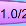
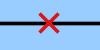
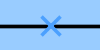
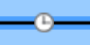
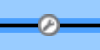
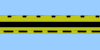
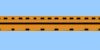
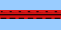
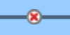

Understanding the Map
InterMapper provides visual cues to help you understand the states of
the devices on your map quickly. Here is a summary of the visual indicators
available in your map:
Color Codes
Devices turn different colors depending on the magnitude of the problem detected.
Links may be "haloed" with yellow or orange as utilization reaches
50 and 90 percent respectively. These are coupled with status badges, described below.
These are the default color assignments. You can redefine the colors from
the Server
Settings (Pg 1) window.
Status Badges
InterMapper uses status badges as additional visual cues to increase the ease with which you can determine the status of one among many device or links.
Note: You can specify which badges you want appear on devices from the InterMapper User Preferences window.
| Badge |
Color |
Meaning |
|

|
Red
(Flashing) |
Down - No response has been received from the device or interface within
the specified timeout period.
|

|
Red
(Solid) |
Critical - The specified threshold for critical state has been
met
|

|
Orange |
Alarm - The specified threshold for alarm state has been met.
|

|
Yellow |
Warning - The specified threshold for warning state has been
met.
|

|
Green |
Up - The device is working below the specified thresholds.
|

|
Gray |
Unknown - The device is not being polled, so its state is unknown.
|
|

|
Purple
|
Searching - The device is searching for adjacent routers (during auto-discovery) or is
tracking down unnumbered interfaces.
|
|
|
Clock |
Acknowledge - Timed- The device or link's problem has been acknowledged and notifications are being suppressed for a specified period of time.
|
|
|
Wrench |
Acknowledge - Timed or Indefinite - The device or link's problem has been acknowledged and notifications are being suppressed indefinitely. |
|
|
Check
mark
(devices)
Blue X
(links)
|
Acknowledge - Basic - The device or link's problem has been acknowledged, and notifications are being suppressed until the device or link comes back up, at which time the check mark or X is cleared.
|
Dotted lines (or "moving ants")
InterMapper draws dotted lines ("ants") next to a link to indicate
that its current traffic flow is above a user-settable threshold value. Use
the Thresholds>Traffic panel of the Map Settings window, available
from the Edit menu, to change the settings and to view a legend of
the different varieties of ants. You see the ants only in Monitor mode (as opposed to Edit mode.) To toggle between the two modes,
click lock in the upper left corner or press Tab.
InterMapper regularly polls all the visible interfaces for packets,
bytes, errors and discards.
Note:
InterMapper uses SNMP
to query the MIB of SNMP-enabled equipment to compute and display the
traffic processed by each interface. Traffic indication appears only for
SNMP-enabled devices.
Boxes and ovals (or "bubbles")
The boxes represent the physical equipment of your network. The ovals
represent the networks which link the routers together. The numbers in the
bubbles are "network identifiers". For IP networks, the number is
the network and the subnet portion of the IP addresses of all devices on it.
For example, "192.0.16.0/24" is a network where IP addresses are
in the range 192.0.16.0-192.0.16.254, and the subnet mask has 24 bits (it
is a Class C network.) This is described in detail in the Subnet
Mask(Pg 1) FAQ.
Click and hold on a router or network to see a status window with information
about that item. (This only works in "browse" mode -- press
Tab, or click the lock in the upper left corner to lock it).
Line styles
The style of the line corresponds to the type of interface.

As with the networks and devices, you can click and hold a link to see
a Status window, containing information about the interface type
and traffic statistics.
Link States
| Badge |
State |
Meaning |
|

|
Red
X
|
Link Down - No response has been received from the interface within
the specified timeout period.
|
|

|
Blue
X |
Basic Acknowledge - The link is down, and has been set to Basic Acknowledge
|
|

|
Clock,
Blue link |
Timed Acknowledge - The link is down, and has been set to Timed Acknowledge
|
|

|
Wrench,
Blue
link |
Indefinite Acknowledge - The link is down, and has been set to Indefinite Acknowledge (Maintenance)
|
|

|
Yellow link |
Warning - The link is working, but has reached one of the specified warning thresholds
|
|

|
Orange link |
Alarm - The link is working, but has reached one of the specified alarm thresholds
|
|

|
Red link
|
Critical- The link is working, but has reached one of the specified critical thresholds
|
|

|
Red X in circle |
Admin Down- the device has responded saying that the interface's ifAdmin status is set to Down.
|